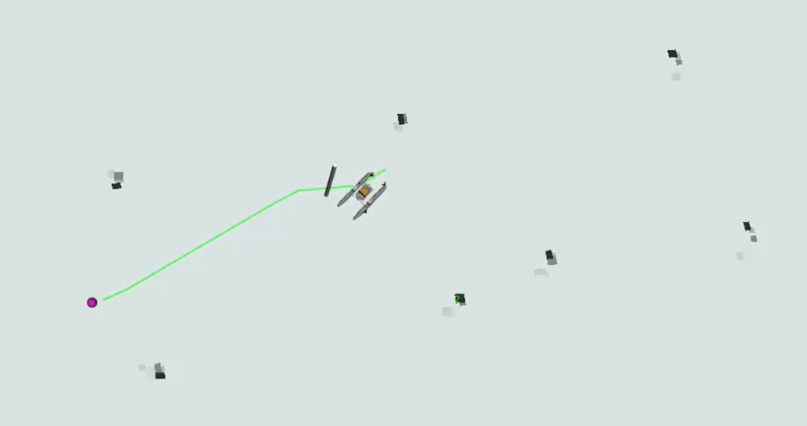
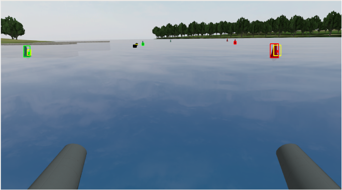

Detecting obstacles in the vehicle’s surroundings is crucial for many tasks. One of the first tasks our team worked on was buoy detection. Most of the navigation courses in Roboboat require us to identify buoys and then figure out how to navigate them.
Perception plays a vital role in identifying objects in the boat’s surroundings and determining their locations. To achieve this, we rely on our sensor suite that includes the HDL-32E Velodyne LiDAR, which provides 3D point clouds, and the ZED 2i Stereo Camera, which captures images.
Camera data is used to identify what the objects in the boat’s surroundings are. Initially, we tried to use color segmentation to detect obstacles, such as buoys. This method works by isolating specific color ranges in the image to identify objects of interest. However, it did not perform well in real-world scenarios due to the noise introduced by varying lighting conditions, reflections, and shadows. Thus, we decided to switch to a fine-tuned YOLOv8 model, chosen for its real-time speed and accuracy. We trained it to detect the different buoy colors and types. However, in cases where training data is unavailable, we fall back on techniques like color segmentation and other heuristic-based methods to classify objects effectively.

LiDAR data is used to identify where objects in the boat’s surroundings are. The positions of the buoys are extracted from LiDAR data using Euclidean clustering, and their locations are projected onto the camera feed using a calibrated extrinsic transformation and the camera's intrinsic matrix. We use the 3D point cloud to generate an occupancy grid. This is a map that highlights locations with obstacles, docks, and other vessels, along with the probability of their presence. The obstacle map is then used by the path planner to efficiently and safely find paths through the buoys without collisions.
Finally, we fuse LiDAR and camera data in order to get a unified understanding of where and what each object is. Using the projected LiDAR point clouds on the camera feed, we match the point clouds and camera objects by pairing those that maximize the total Intersection over Union (IoU) between their bounding boxes.
